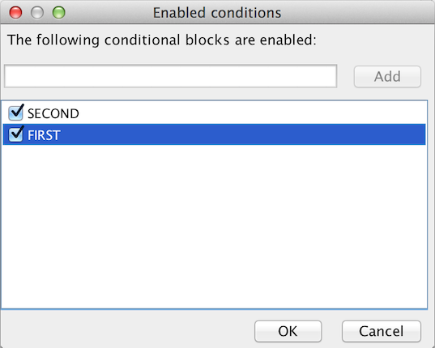

Conditional blocks in Distributed Documentor
Posted on July 13, 2014
I’ve added a new feature to Distributed Documentor today, conditional blocks.
The idea is that parts of the documents can be enabled when a given condition is present. This is very similar to C’s ifdef blocks. To use it with the MediaWiki syntax, put [When:X] and [End] commands in separate lines:
Unconditional
[When:FIRST]
First conditional
[When:SECOND]
First and second conditional
[End]
[End]
[When:SECOND]
Second conditional
[End]Snippets can also have conditional blocks.
There are two possibilities to set which conditionals are enabled:
Specifying it with command line arguments, such as
java -jar DistributedDocumentor.jar -D FIRST -D SECONDThis is useful when exporting a documentation from command line, or to launch the documentation editor with a predefined set of enabled conditions.
On the user interface, using View menu’s Enabled conditions… menu item:

comments powered by Disqus